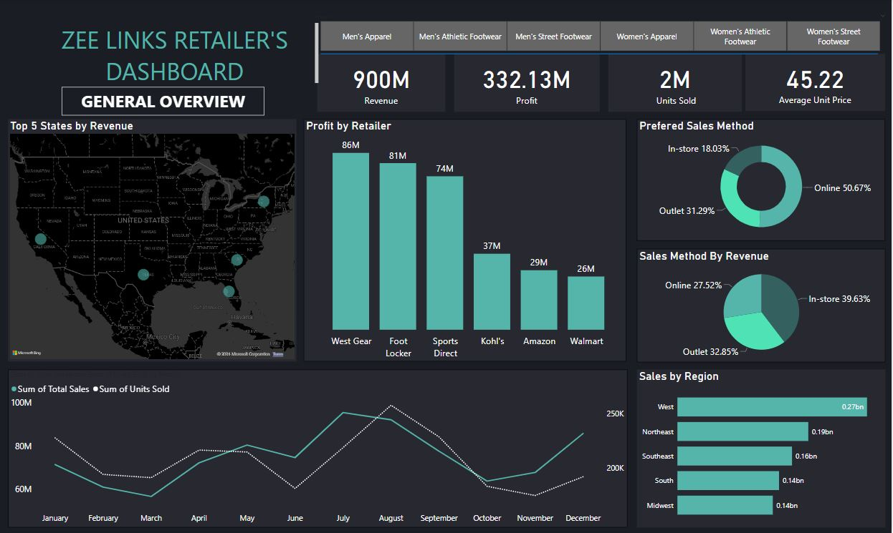

ZEE LINKS RETAILER STORE ANALYSIS

BUSINESS PROBLEM
Zee Links Retailer operates in a highly competitive market, and the company is focused on optimizing its sales channels, understanding profit drivers, and strategically positioning itself in key regions. The central business problems addressed in this analysis are:
- Identifying the most profitable retailers and understanding their impact on the company’s overall profitability.
- Evaluating the effectiveness of different sales methods to improve revenue and customer reach.
- Analyzing regional sales performance to allocate resources effectively and enhance market penetration.
- Monitoring sales trends over time to align inventory and marketing strategies with customer demand patterns.
INSIGHTS AND FINDINGS
Through a detailed analysis of the dashboard, the following key insights were derived:
- Revenue and Profit Overview: Zee Links generated a total revenue of 900M with a profit of 332.13M.
- Units Sold: A total of 2M units were sold with an average unit price of 45.22. This indicates a strong market presence and high product demand.
- Profit by Retailer: Top Performers: West Gear (86M), Foot Locker (81M), and Sports Direct (74M) are the leading contributors to profit. These retailers should be the focus of continued partnership and marketing efforts.
- Lower Performers: Amazon (29M) and Walmart (26M) have lower profit contributions, suggesting the need for strategies to boost their performance or reconsidering resource allocation.
- Sales by Region: The West region leads with 0.27Bn in sales, followed by the Northeast and Southeast. This suggests that marketing and sales efforts are most effective in these regions, while the South and Midwest may require targeted campaigns to improve performance.
- Sales Methods:Preferred: The online sales channel is the most preferred by customers, accounting for 50.67% of total sales, followed by outlet stores (31.29%) and in-store purchases (18.03%). This trend indicates a shift towards e-commerce, which aligns with industry trends.
- Sales Method by Revenue: Despite being the least preferred, in-store purchases contribute the most revenue (39.63%), followed by online sales (27.52%) and outlets (32.85%). This could imply that in-store customers tend to make higher-value purchases, suggesting a need for premium in-store experiences.
- Sales Trends Over Time: The sales data shows fluctuations throughout the year, with peaks around April and August. The sharp decline in October could indicate seasonal trends or market challenges, requiring further investigation and action.
Methods used
The following steps were meticulously executed using Power BI to derive these insights:
- Data Collection: Data was collected from Zee Links Retailer’s transactional databases, covering aspects like sales figures, profit margins, sales channels, and regional data.
- Data Cleaning and Preprocessing: The data was cleaned and preprocessed to remove inconsistencies, standardize formats, and handle missing values. This step ensured the reliability and accuracy of the subsequent analysis.
- Data Modeling: A robust data model was created in Power BI to establish relationships between different data tables, allowing for seamless analysis across multiple dimensions (e.g., time, geography, retailer, and sales method).
- Dashboard Creation: A user-friendly dashboard was designed in Power BI to present key metrics and insights visually. The use of maps, bar charts, and pie charts helped to clearly convey complex data relationships in an intuitive format.
- Insight Extraction: Advanced analytical functions in Power BI, such as DAX (Data Analysis Expressions), were employed to calculate profit margins, identify trends, and segment data by various categories. These insights were critical in forming actionable business recommendations.
RECOMMENDATIONS
Based on the insights gathered, the following strategic recommendations are proposed:
- Strengthen Key Retailer Relationships: Invest in deeper partnerships and exclusive product lines with top-performing retailers like West Gear and Foot Locker to maximize profitability.
- Enhance Online Sales Infrastructure: Given the strong preference for online purchases, enhancing the online shopping experience with personalized recommendations, faster shipping options, and seamless mobile integration can drive further growth.
- Regional Marketing Focus: Increase marketing and sales efforts in the South and Midwest regions, where performance lags behind other areas. This could involve localized promotions or partnerships with regional influencers.
- In-Store Experience: Leverage the higher revenue generated from in-store purchases by enhancing the in-store experience with exclusive offers, premium customer service, and loyalty programs to drive higher sales.
- Seasonal Inventory Planning: Align inventory and marketing strategies with the observed sales peaks in April and August, ensuring product availability and promotional campaigns are optimized for these periods.
RETURN TO HOMEPAGE | VISIT MY LINKEDIN